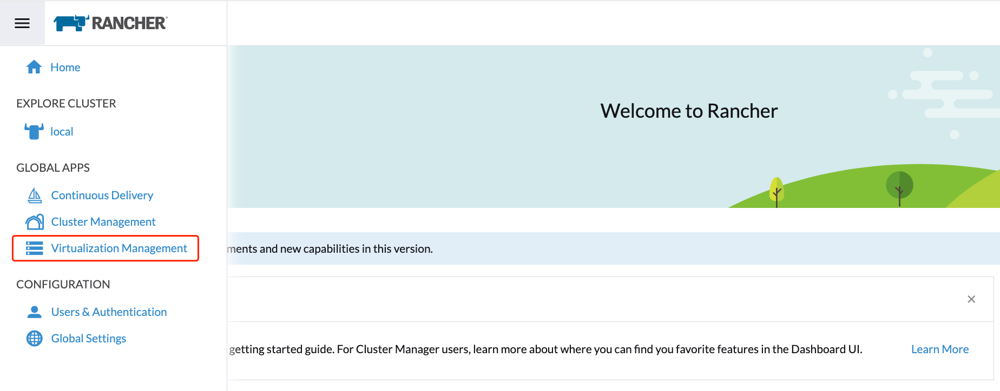

Gerenciamento da virtualização
Com as capacidades de gerenciamento de virtualização do Rancher, você pode importar e gerenciar múltiplos clusters SUSE Virtualization. Ele fornece uma solução que unifica o gerenciamento de virtualização e de contêineres a partir de uma única interface.
Além disso, SUSE Virtualization aproveita as capacidades existentes do Rancher, como autenticação e controle RBAC para suporte a multi-inquilino.
Para informações sobre como implantar Rancher e provisionar clusters Kubernetes usando vários provedores de nuvem, veja Implantando SUSE Rancher Prime o Servidor.
Importando SUSE Virtualization cluster
-
UI
-
API
-
Verifique e prepare a imagem do contêiner.
Para facilitar a tarefa de importação, um novo pod chamado
cattle-cluster-agent-*será criado no cluster SUSE Virtualization. A imagem do contêiner usada para este pod depende da versão do seu servidor Rancher (por exemplo, a imagemrancher/rancher-agent:v2.7.9é usada se você estiver executando Rancher v2.7.9). Além disso, esta imagem dinâmica não está embalada no ISO SUSE Virtualization e é puxada do repositório durante a importação.Se o seu cluster SUSE Virtualization não for acessível diretamente da internet, execute uma das seguintes ações:
-
Configure um registro privado para o cluster e adicione a imagem. O Harvester puxará automaticamente a imagem deste registro.
-
Se você configurou um proxy HTTP para acessar serviços externos, verifique se está funcionando conforme o esperado. Os servidores DNS que você especificou na configuração do Harvester devem ser capazes de resolver o nome de domínio
docker.io. -
Baixe a imagem usando o comando
docker pull rancher/rancher-agent:v2.7.9 && docker save -o rancher-agent.tar rancher/rancher-agent:v2.7.9. Em seguida, crie uma cópia da imagem baixada em cada nó do cluster e, em seguida, importe a imagem para o containerd usando o comandosudo -i ctr --namespace k8s.io image import rancher-agent.tar. Por fim, executesudo -i crictl image ls | grep "rancher-agent"em cada nó para garantir que a imagem esteja pronta.
-
-
Uma vez que o servidor Rancher esteja em funcionamento, faça login e clique no menu de hambúrguer e escolha a aba Gerenciamento de Virtualização. Selecione Importar Existente para importar o SUSE Virtualization cluster downstream para o servidor Rancher.

-
Especifique o
Cluster Namee clique em Criar. Você verá então o guia de registro; por favor, abra o painel do SUSE Virtualization cluster de destino e siga o guia de acordo.
-
Uma vez que o nó do agente esteja pronto, você deve ser capaz de visualizar e acessar o cluster SUSE Virtualization importado a partir do servidor Rancher e gerenciar suas VMs de acordo.

Sempre que o nó do agente ficar preso, execute o comando
kubectl get pod cattle-cluster-agent-* -n cattle-system -oyamlno cluster SUSE Virtualization. Se a seguinte mensagem for exibida, verifique as informações na etapa 1, mate este pod e então um novo pod será criado automaticamente para reiniciar o processo de importação.... state: waiting: message: Back-off pulling image "rancher/rancher-agent:v2.7.9" reason: ImagePullBackOff ... -
Na interface do SUSE Virtualization, você pode clicar no menu hambúrguer para navegar de volta à página de gerenciamento de múltiplos clusters Rancher.

-
No cluster Kubernetes Rancher, crie um novo recurso
Cluster.Exemplo:
apiVersion: provisioning.cattle.io/v1 kind: Cluster metadata: name: harvester-cluster-name namespace: fleet-default labels: provider.cattle.io: harvester annotations: field.cattle.io/description: Human readable cluster description spec: agentEnvVars: [] -
Uma vez que o status do recurso
Clusterseja atualizado, obtenha o ID do cluster (formato:c-m-foobar) da propriedade.status.clusterName. -
Crie um
ClusterRegistrationTokenusando o ID do cluster no namespace com o mesmo nome que o ID do cluster. Você deve especificar o ID do cluster no campo.spec.clusterNamedo token.Exemplo:
apiVersion: management.cattle.io/v3 kind: ClusterRegistrationToken metadata: name: default-token namespace: c-m-foobar spec: clusterName: c-m-foobar -
Uma vez que o status do
ClusterRegistrationTokenseja atualizado, obtenha o valor da propriedade.status.manifestUrldo token. -
No cluster SUSE Virtualization, aplique o patch da configuração
cluster-registration-urle especifique a URL obtida da propriedade.status.manifestUrldo token de registro do cluster no campovalue.Exemplo:
apiVersion: harvesterhci.io/v1beta1 kind: Setting metadata: name: cluster-registration-url value: https://rancher.example.com/v3/import/abcdefghijkl1234567890-c-m-foobar.yaml
Upgrades
Para fazer upgrade de um cluster SUSE Virtualization importado, você deve fazer upgrade de Rancher, da extensão da UI do Harvester e de SUSE Virtualization em uma ordem específica. A Extensão da UI do Harvester é necessária para acessar a UI do SUSE Virtualization nas versões Rancher v2.10.x e posteriores.
-
Verifique a matriz de suporte para determinar as versões do Rancher e da Extensão da UI do Harvester que correspondem ao cluster SUSE Virtualization.
-
Atualize Rancher.
-
Atualize a Extensão da UI do Harvester.
Para informações sobre como atualizar a extensão em um ambiente air-gapped, veja Extensão da UI do Harvester com Rancher Integração.
-
Atualize SUSE Virtualization.
Recursos na versão SUSE Virtualization v1.5.0 e versões posteriores são implementados na Extensão da UI do Harvester. Se você não fizer upgrade de Rancher e da Extensão da UI do Harvester, esses recursos podem não estar disponíveis.
Multi-Inquilino
SUSE Virtualization aproveita a Rancher existente autorização RBAC de forma que os usuários possam visualizar e gerenciar um conjunto de recursos com base em suas permissões de função de cluster e projeto.
Dentro de Rancher, cada pessoa se autentica como um usuário, que é um login que concede acesso a Rancher. Conforme mencionado em Autenticação, os usuários podem ser locais ou externos.
Uma vez que o usuário faça login em Rancher, sua autorização, também conhecida como direitos de acesso, é determinada por permissões globais e funções de cluster e projeto.
-
Permissões Globais: Defina a autorização do usuário fora do escopo de qualquer cluster específico.
-
Funções de Cluster e Projeto: Defina a autorização do usuário dentro do cluster ou projeto específico onde os usuários são atribuídos à função.
Tanto as permissões globais quanto as funções de cluster e projeto são implementadas sobre Kubernetes RBAC. Portanto, a aplicação de permissões e funções é realizada pelo Kubernetes.
-
Um proprietário de cluster tem controle total sobre o cluster e todos os recursos dentro dele, por exemplo, hosts, VMs, volumes, imagens, redes, backups e configurações.
-
Um usuário de projeto pode ser atribuído a um projeto específico com permissão para gerenciar os recursos dentro do projeto.
|
Gerenciar o acesso do usuário usando os modelos de função incorporados e RBAC com escopo de projeto é altamente recomendado. SUSE Virtualization implementa seu próprio modelo de RBAC sobre o Kubernetes e KubeVirt, integrando-se com Projetos no estilo Rancher e lógica de multi-inquilino. Durante atualizações ou reconfigurações, |
Exemplo de multi-inquilino
O seguinte exemplo fornece uma boa explicação de como o recurso multi-inquilino funciona:
-
Primeiro, adicione novos usuários na página Rancher
Users & Authentication. Em seguida, clique emCreatepara adicionar dois novos usuários separados, comoproject-ownereproject-readonly, respectivamente.-
Um
project-owneré um usuário com permissão para gerenciar uma lista de recursos de um projeto específico, por exemplo, o projeto padrão. -
Um
project-readonlyé um usuário com permissão somente leitura de um projeto específico, por exemplo, o projeto padrão.
-
-
Clique em um dos clusters SUSE Virtualization importados após navegar para a interface do usuário SUSE Virtualization.
-
Clique na aba
Projects/Namespaces. -
Selecione um projeto como
defaulte clique no menuEdit Configpara atribuir os usuários a este projeto com as permissões apropriadas. Por exemplo, o usuárioproject-ownerserá atribuído à função de proprietário do projeto.
-
-
Continue adicionando o usuário
project-readonlyao mesmo projeto com permissões somente leitura e clique em Salvar.
-
Abra um navegador em modo incógnito e faça login como
project-owner. -
Após fazer login como o usuário
project-owner, clique na aba Gerenciamento de Virtualização. Lá você deve conseguir visualizar o cluster e o projeto ao qual foi atribuído. -
Clique na aba Imagens para visualizar uma lista de imagens previamente carregadas no namespace
harvester-public. Você também pode carregar sua própria imagem, se necessário. -
Crie uma VM com uma das imagens que você carregou.
-
Faça login com outro usuário, por exemplo,
project-readonly, e este usuário terá apenas a permissão de leitura do projeto atribuído.
|
O namespace |
Excluir SUSE Virtualization Cluster Importado
Os usuários podem excluir o cluster SUSE Virtualization importado da tela de Gerenciamento de Virtualização da interface do usuário Rancher. Selecione o cluster que deseja remover e clique no botão Excluir para excluir o SUSE Virtualization cluster importado.
Você também precisará redefinir a configuração cluster-registration-url no cluster SUSE Virtualization associado para limpar o agente do cluster Rancher.

|
Por favor, não execute o comando |